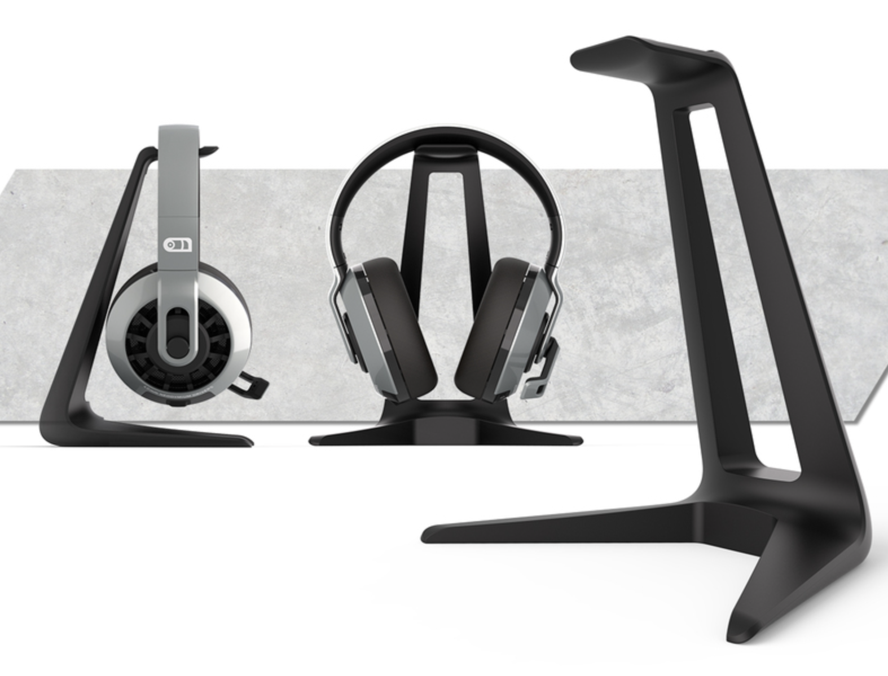
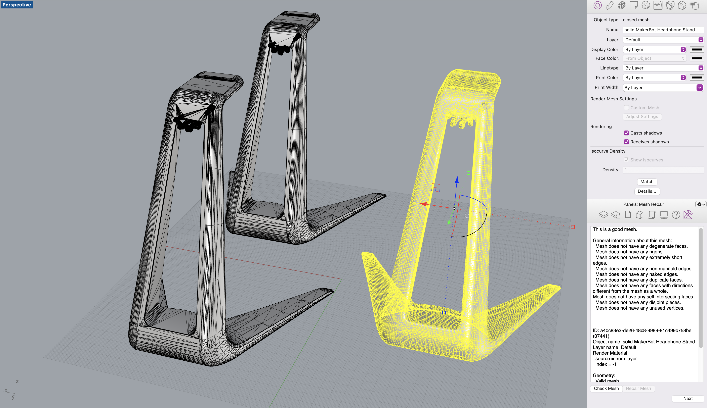
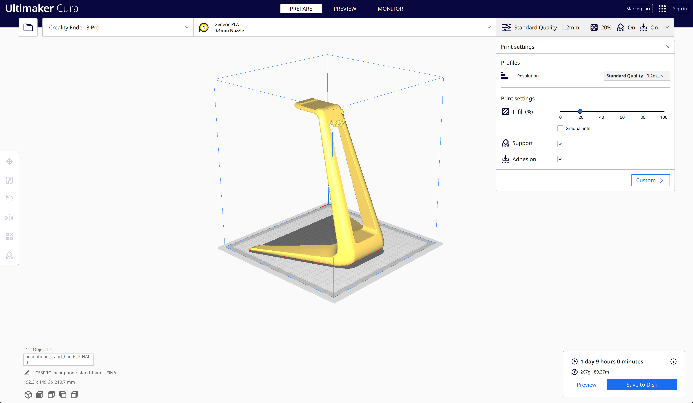
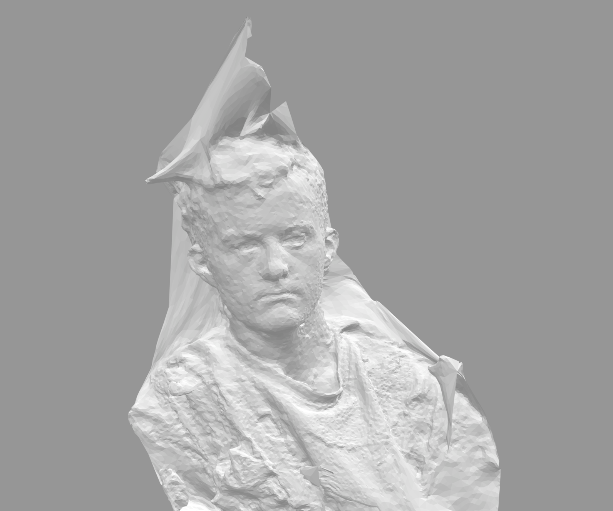
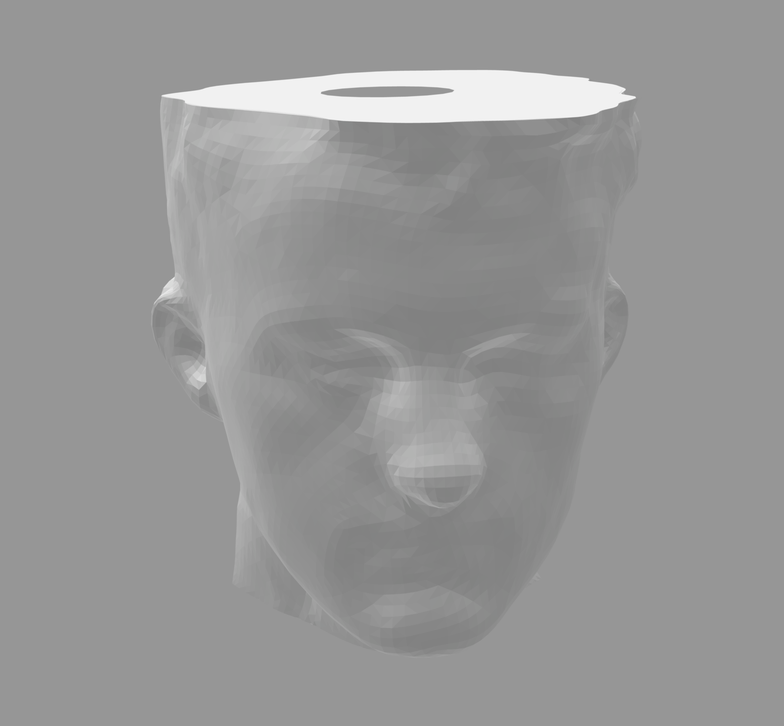

Unfortunately, after a long time struggling with getting the meshes to combine into a single good mesh, I realized the phone stand was a bad mesh to start with. Instead of trying to fix that mesh, I found this headphone stand to work with instead:
Headphone stand

3
This worked a lot better! I was able to first position the hand up against the headphone stand in the position I wanted, then slowly trimmed away the points and edges from the hand that I didn't need.
4
I was able to trim the hands using the headphone stand mesh to get the fit perfect. Then I moved the hands slightly into the mesh, did a boolean mesh union, and a quad remesh. Finally this resulted in a closed mesh which Rhino considered a "good mesh" so I counted it as a win!

5
Finally, I imported to Cura and sliced it to make sure the print would work well.

6
Moving onto the next phase, I started working on my lamp mesh. I decided I wanted to make a replica of my face on a hanging lamp?
I used the iOS app polycam to scan my head, and after a few very bad attempts, I came up with one that was almost good.
Which resulted in the following STL:

7
Finally, I cleaned up the mesh with deleting/trimming points and remeshing, mirrored the face to complete a shape, and added a top and bottom. I trimmed the top with a 27mm round hole so that the plug can fit through but not the rest of the housing.
